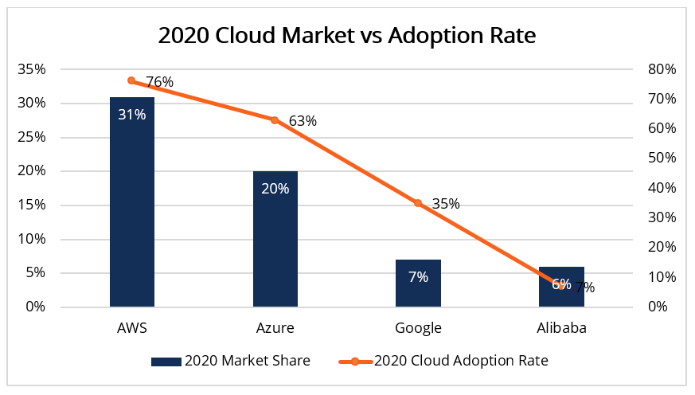

Cloud Services
A range of IT applications and resources hosted by third-party providers
and
delivered on-demand to organizations and individual customers through the internet
What are Cloud Services?
Cloud services are a range of IT applications and resources that include
software,
infrastructure, and platforms hosted by third-party providers and delivered
on-
demand to organizations and individual customers through the internet. They can
also
be referred to as cloud computing; hence the words can be used
interchangeably.
According to the Cisco Global Index (2016-2021), about 94% of enterprise
workloads
will be cloud-based by 2021. A snapshot of the leading cloud service vendors as of Q4 2020
is given below:
